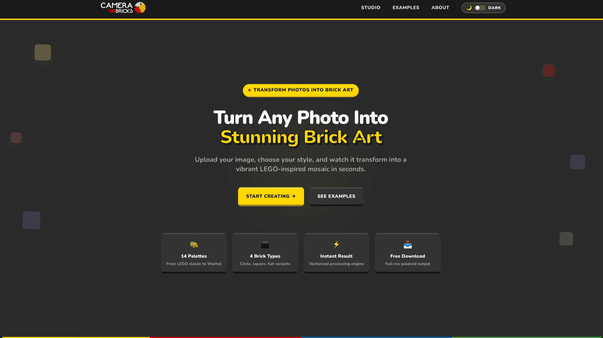

Lego - Web Application
Convert your picture into Lego style and share it on your favorite social networks.
Python
FastAPI
React
Convert your picture into Lego style and share it on your favorite social networks.
The Lego Web Application (Camera Bricks) converts any photograph into brick-mosaic art. Upload an image, pick a colour palette, a brick style and a level of detail, and the app returns the picture rebuilt out of studs — as a framed Polaroid-style image, as a raw image without the frame, and as a printable instructions sheet.
The conversion is so fast that even a 96-brick-wide mosaic appears almost instantly. Each stud is drawn on a real brick texture, so highlights and shading survive the recolouring and the result reads as physical bricks.
The second output is the instructions PDF: a numbered build grid where every cell takes the colour of its brick, with a legend of 3D brick icons for each colour used.
Choose among LEGO Classic, Warhol-style series, monochrome scales and reduced colour sets, round or square studs in raised or flat versions, and 24, 48 or 96 bricks across — trading resolution against buildability.
Colours are matched with a perception-weighted measure, which follows the way the eye reads brightness far better than plain colour distance.

The conversion is done entirely with vectorised NumPy operations over the whole grid. The FastAPI back end exposes a small documented REST API and keeps palettes, textures and icons in memory, and the React and Tailwind front end handles upload and presentation.
Implements the whole conversion pipeline — cropping to a whole brick grid, colour quantisation, brick compositing, Polaroid framing and PDF instruction generation.
Serves the five endpoints (palettes, brick types, examples, brickify, instructions), validates the multipart uploads and loads the static asset caches through its lifespan hook.
The performance core: the 5-D reshape that averages every brick cell at once, the broadcast nearest-colour search over the palette, and the single-shot colourisation of the brick texture.
Composites the Polaroid border and logo, encodes the JPEG results, and assembles the multi-part instructions page into a PDF.
Handles image decoding, resizing and the cell rendering used to build the numbered instruction grid.
Builds the single-page frontend — upload, option selection, live preview and downloads — with Vite providing the dev server and production build.
Styles the whole interface, including the dark/light theme whose choice is persisted in localStorage.
Handle the API calls, the drag-and-drop upload zone and the non-blocking success/error notifications.